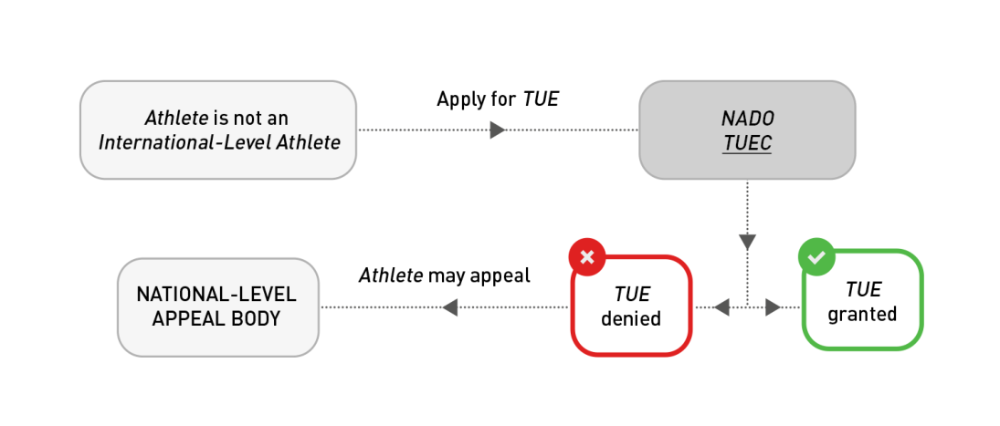
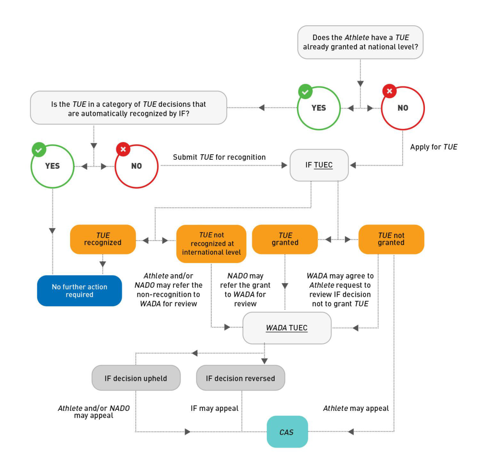

UCI Anti-Doping Regulations
UCI REGULATIONS FOR THERAPEUTIC USE EXEMPTIONS
(“UCI TUER”)
Version entering into force on 20 February 2023
UCI TUER – February 2023
Page 1 of 23
UCI Anti-Doping Regulations
UCI TUER – February 2023
Page 2 of 23
UCI Anti-Doping Regulations
PART ONE: INTRODUCTION, UCI ANTI-DOPING RULES AND UCI ANTI-DOPING REGULATIONS PROVISIONS AND DEFINITIONS
1.0 Introduction and Scope
The UCI Regulations for Therapeutic Use Exemptions ( UCI TUER ) are mandatory regulations supplementing the UCI Anti-Doping Regulations ( UCI ADR ).
The purpose of the UCI TUER is to establish (a) the conditions that must be satisfied in order for a Therapeutic Use Exemption ( TUE ) to be granted, permitting the presence of a Prohibited Substance in a Rider’s Sample or the Rider’s Use or Attempted Use, Possession and/or Administration or Attempted Administration of a Prohibited Substance or Prohibited Method for Therapeutic reasons; (b) the responsibilities imposed on the UCI in making and communicating TUE decisions; (c) the process for a Rider to apply for a TUE; (d) the process for a Rider to get a TUE granted by one AntiDoping Organization recognized by the UCI; (e) the process for WADA to review TUE decisions; and (f) the strict confidentiality provisions that apply to the TUE process .
Terms used in the UCI TUER that are defined terms from the UCI ADR are italicized. Terms that are defined in the UCI TUER or another Regulations are underlined.
2.0 UCI ADR Provisions
The following articles in the 2021 UCI ADR are directly relevant to the UCI TUER:
-
Article 4.4 Therapeutic Use Exemptions ("TUEs").
-
Article 13.4 Appeals Relating to TUEs.
UCI TUER – February 2023
Page 3 of 23
UCI Anti-Doping Regulations
3.0 Definitions and Interpretation
3.1 Defined terms from the 2021 UCI ADR that are used in the UCI TUER
ADAMS : The Anti-Doping Administration and Management System is a Web-based database management tool for data entry, storage, sharing, and reporting designed to assist stakeholders and WADA in their anti-doping operations in conjunction with data protection legislation.
Administration : Providing, supplying, supervising, facilitating, or otherwise participating in the Use or Attempted Use by another Person of a Prohibited Substance or Prohibited Method. However, this definition shall not include the actions of bona fide medical personnel involving a Prohibited Substance or Prohibited Method Used for genuine and legal therapeutic purposes or other acceptable justification and shall not include actions involving Prohibited Substances which are not prohibited in Out-of-Competition Testing unless the circumstances as a whole demonstrate that such Prohibited Substances are not intended for genuine and legal therapeutic purposes or are intended to enhance sport performance .
Adverse Analytical Finding : A report from a WADA- accredited laboratory or other WADA - approved laboratory that, consistent with the International Standard for Laboratories, establishes in a Sample the presence of a Prohibited Substance or its Metabolite s or Marker s or evidence of the Use of a Prohibited Method.
Anti-Doping Organization : WADA or a Signatory that is responsible for adopting rules for initiating, implementing or enforcing any part of the Doping Control process. This includes, for example, the International Olympic Committee, the International Paralympic Committee, other Major Event Organizations that conduct Testing at their Events, International Federations, and National Anti-Doping Organizations.
Attempt : Purposely engaging in conduct that constitutes a substantial step in a course of conduct planned to culminate in the commission of an anti-doping rule violation. Provided, however, there shall be no anti-doping rule violation based solely on an Attempt to commit a violation if the Person renounces the Attempt prior to it being discovered by a third party not involved in the Attempt.
CAS : The Court of Arbitration for Sport.
Code : The World Anti-Doping Code.
Competition : A single race organized separately (for example: each of the time trial and road race at the road World Championships; a stage in a stage race; a Cross-country Eliminator heat) or a series of races forming an organizational unit and producing a final winner and/or general classification (for example: a track sprint race tournament, a cyclo-ball tournament).
Education: The process of learning to instill values and develop behaviors that foster and protect the spirit of sport, and to prevent intentional and unintentional doping.
UCI TUER – February 2023
Page 4 of 23
UCI Anti-Doping Regulations
Event : A single Competition organized separately (for example: a one-day road race) or a series of Competitions conducted together as a single organization (for example: road World Championships; a road stage race, a track World Cup Event ); a reference to Event includes reference to Competition, unless the context indicates otherwise.
In-Competition : The Event Period. However, for the purpose of the Prohibited List, InCompetition is the period commencing at 11:59 p.m. on the day before a Competition in which the Rider is scheduled to participate through the end of such Competition and the Sample collection process related to such Competition.
[Comment to In-Competition: Having a universally accepted definition for In-Competition provides greater harmonization among Riders across all sports, eliminates or reduces confusion among Riders about the relevant timeframe for In-Competition Testing, avoids inadvertent Adverse Analytical Findings in between Competitions during an Event and assists in preventing any potential performance enhancement benefits from Substances prohibited Out-of-Competition being carried over to the Competition period.]
International Event : An Event or Competition where the International Olympic Committee, the International Paralympic Committee, an International Federation, a Major Event Organization, or another international sport organization is the ruling body for the Event or appoints the technical officials for the Event.
For the purpose of Article 5.3 UCI ADR exclusively , International Events are Events for which the UCI has Testing responsibility and are referred to as “UCI International Events”. UCI International Events are defined annually by the UCI. The list of such UCI International Events is communicated to the relevant Anti-Doping Organizations before the start of the season and whenever required.
International-Level Rider : Riders who compete in sport at the international level, as defined in the Introduction of the UCI ADR.
International Standard : A standard adopted by WADA in support of the Code. Compliance with an International Standard (as opposed to another alternative standard, practice or procedure) shall be sufficient to conclude that the procedures addressed by the International Standard were performed properly. International Standards shall include any Technical Documents issued pursuant to the International Standard.
Major Event Organizations : The continental associations of National Olympic Committee s and other international multi-sport organizations that function as the ruling body for any continental, regional or other International Event.
National Anti-Doping Organization : The entity(ies) designated by each country as possessing the primary authority and responsibility to adopt and implement anti-doping rules, direct the collection of Samples, manage test results and conduct Results Management at the national level. If this designation has not been made by the competent public authority(ies), the entity shall be the country’s National Olympic Committee or its designee.
UCI TUER – February 2023
Page 5 of 23
UCI Anti-Doping Regulations
National Event : A sport Event or Competition involving International- or National-Level Riders that is not an International Event.
National-Level Rider : Riders who compete in sport at the national level, as defined by each National Anti-Doping Organization, consistent with the International Standard for Testing and Investigations.
Out-of-Competition : Any period which is not In-Competition.
Possession : The actual, physical Possession, or the constructive Possession (which shall be found only if the Person has exclusive control or intends to exercise control over the Prohibited Substance or Prohibited Method or the premises in which a Prohibited Substance or Prohibited Method exists); provided, however, that if the Person does not have exclusive control over the Prohibited Substance or Prohibited Method or the premises in which a Prohibited Substance or Prohibited Method exists, constructive Possession shall only be found if the Person knew about the presence of the Prohibited Substance or Prohibited Method and intended to exercise control over it. Provided, however, there shall be no antidoping rule violation based solely on Possession if, prior to receiving notification of any kind that the Person has committed an anti-doping rule violation, the Person has taken concrete action demonstrating that the Person never intended to have Possession and has renounced Possession by explicitly declaring it to an Anti-Doping Organization. Notwithstanding anything to the contrary in this definition, the purchase (including by any electronic or other means) of a Prohibited Substance or Prohibited Method constitutes Possession by the Person who makes the purchase.
[Comment to Possession: Under this definition, anabolic steroids found in a Rider ' s car would constitute a violation unless the Rider establishes that someone else used the car; in that event, the Anti-Doping Organization must establish that, even though the Rider did not have exclusive control over the car, the Rider knew about the anabolic steroids and intended to have control over them. Similarly, in the example of anabolic steroids found in a home medicine cabinet under the joint control of a Rider and spouse, the Anti-Doping Organization must establish that the Rider knew the steroids were in the cabinet and that the Rider intended to exercise control over them. The act of purchasing a Prohibited Substance alone constitutes Possession, even where, for example, the product does not arrive, is received by someone else, or is sent to a third-party address.]
Prohibited List : The list identifying the Prohibited Substances and Prohibited Methods.
Prohibited Method : Any method so described on the Prohibited List.
Prohibited Substance : Any substance, or class of substances, so described on the Prohibited List.
UCI TUER – February 2023
Page 6 of 23
UCI Anti-Doping Regulations
Rider : Any Person subject to the UCI ADR who competes in the sport of cycling at the international level (as defined by each International Federation) or the national level (as defined by each National Anti-Doping Organization).
An Anti-Doping Organization has discretion to apply anti-doping rules to a Rider who is neither an International-Level Rider nor a National-Level Rider, and thus to bring them within the definition of “ Rider ”. In relation to Riders who are neither International-Level nor NationalLevel Riders, an Anti-Doping Organization may elect to: conduct limited Testing or no Testing at all; analyze Samples for less than the full menu of Prohibited Substances; require limited or no whereabouts information; or not require advance TUEs. However, if an Article 2.1, 2.3 or 2.5 anti-doping rule violation is committed by any Rider over whom an Anti-Doping Organization has elected to exercise its authority to test and who competes below the international or national level, then the Consequences set forth in the Code must be applied. For purposes of Article 2.8 and Article 2.9 and for purposes of anti-doping information and Education, any Person who participates in sport under the authority of any Signatory, government, or other sports organization accepting the Code is a Rider.
[Comment to Rider: Individuals who participate in sport may fall in one of five categories: 1) International-Level Rider, 2) National-Level Rider, 3) individuals who are not International or National-Level Riders but over whom the International Federation or National Anti-Doping Organization has chosen to exercise authority, 4) Recreational Rider, and 5) individuals over whom no International Federation or National Anti-Doping Organization has, or has chosen to, exercise authority. All International and National-Level Riders are subject to the antidoping rules of the Code, with the precise definitions of international and national level sport to be set forth in the anti-doping rules of the International Federations and National AntiDoping Organizations.]
Recreational Rider : A natural Person who is so defined by the relevant National Anti-Doping Organization; provided, however, the term shall not include any Person who is or was contracted to a UCI registered Team at the time of the anti-doping rule violation or within the five (5) years prior to committing any anti-doping rule violation, has been an InternationalLevel Rider (as defined by each International Federation consistent with the International Standard for Testing and Investigations) or National-Level Rider (as defined by each National Anti-Doping Organization consistent with the International Standard for Testing and Investigations), has represented any country in an International Event in an open category or has been included within any Registered Testing Pool or other whereabouts information pool maintained by any International Federation or National Anti-Doping Organization.
[Comment to Recreational Rider: The term “open category” is meant to exclude competition that is limited to junior or age group categories.]
Registered Testing Pool : The pool of highest-priority Rider established separately at the international level by International Federations and at the national level by National AntiDoping Organizations, who are subject to focused In-Competition and Out-of-Competition Testing as part of that International Federation's or National Anti-Doping Organization's test distribution plan and therefore are required to provide whereabouts information as provided in Article 5.5 and the International Standard for Testing and Investigations.
UCI TUER – February 2023
Page 7 of 23
UCI Anti-Doping Regulations
Results Management : The process encompassing the timeframe between notification as per Article 5 of the International Standard for Results Management, or in certain cases (e.g., Atypical Finding, Rider Biological Passport, Whereabouts Failure ), such pre-notification steps expressly provided for in Article 5 of the International Standard for Results Management, through the charge until the final resolution of the matter, including the end of the hearing process at first instance or on appeal (if an appeal was lodged).
Sample or Specimen : Any biological material collected for the purposes of Doping Control.
[Comment to Sample or Specimen: It has sometimes been claimed that the collection of blood Samples violates the tenets of certain religious or cultural groups. It has been determined that there is no basis for any such claim.]
Testing : The parts of the Doping Control process involving test distribution planning, Sample
collection, Sample handling, and Sample transport to the laboratory.
Testing Pool : The tier below the Registered Testing Pool which includes Riders from whom some whereabouts information is required in order to locate and Test the Rider Out-ofCompetition.
Therapeutic Use Exemption (TUE) : A Therapeutic Use Exemption allows a Rider with a medical condition to use a Prohibited Substance or Prohibited Method, but only if the conditions set out in Article 4.4 and the International Standard for Therapeutic Use Exemptions are met.
UCI : Union Cycliste Internationale, the International Federation governing the sport of cycling.
UCI Website : a website on which these Anti-Doping Rules and other documents referred to in these Anti-Doping Rules are made available in their current version.
Use : The utilization, application, ingestion, injection or consumption by any means whatsoever of any Prohibited Substance or Prohibited Method.
WADA : The World Anti-Doping Agency.
3.2 Defined terms from the International Standard for the Protection of Privacy and Personal Information
Personal Information: Information, including without limitation Sensitive Personal Information, relating to an identified or identifiable Participant or other Person whose information is Processed solely in the context of an Anti-Doping Organization’s Anti-Doping Activities.
[Comment to Personal Information: It is understood that Personal Information includes, but is not limited to, information relating to a Rider’s name, date of birth, contact details and sporting affiliations, whereabouts, designated TUEs (if any), anti-doping test results, and Results Management (including disciplinary hearings, appeals and sanctions). Personal Information also includes personal details and contact information relating to other Persons,
UCI TUER – February 2023
Page 8 of 23
UCI Anti-Doping Regulations
such as medical professionals and other Persons working with, treating or assisting a Rider in the context of Anti-Doping Activities. Such information remains Personal Information and is regulated by this International Standard for the entire duration of its Processing, irrespective of whether the relevant individual remains involved in organized sport.]
Processing (and its cognates, Process and Processed ) : Collecting, accessing, retaining, storing, disclosing, transferring, transmitting, amending, deleting or otherwise making use of Personal Information.
3.3 Defined terms specific to the UCI TUER
Therapeutic: Of or relating to the treatment of a medical condition by remedial agents or methods; or providing or assisting in a cure.
Therapeutic Use Exemption Committee (or "TUEC"): The panel established by an AntiDoping Organization to consider applications for TUEs.
WADA TUEC: The panel established by WADA to review the TUE decisions of other AntiDoping Organizations.
3.4 Interpretation
-
3.4.1 The official text of the UCI TUER shall be published in English and French. In the event of any conflict between the English and French versions, the English version shall prevail.
-
3.4.2 Like the UCI ADR, the UCI TUER have been drafted giving consideration to the principles of proportionality, human rights, and other applicable legal principles. It shall be interpreted and applied in that light.
-
3.4.3 The comments annotating various provisions of the UCI TUER shall be used to guide its interpretation.
-
3.4.4 Unless otherwise specified, references to Sections and Articles are references to Sections and Articles of the UCI TUER.
-
3.4.5 Where the term “days” is used in these Regulations, it shall mean calendar days unless otherwise specified.
-
3.4.6 The Annexes to the UCI TUER have the same mandatory status as the rest of these Regulations.
UCI TUER – February 2023
Page 9 of 23
UCI Anti-Doping Regulations
PART TWO: STANDARDS AND PROCESS FOR GRANTING TUES
4.0 Obtaining a TUE
A Rider who needs to Use a Prohibited Substance or Prohibited Method for Therapeutic reasons must apply for and obtain a TUE prior to Using or Possessing the substance or method in question, unless the Rider is entitled to apply for a TUE retroactively under Article 4.1. In both cases, the Article 4.2 conditions must be satisfied.
[Comment to Article 4.0: There may be situations where a Rider has a medical condition and is Using or Possessing a Prohibited Substance or Prohibited Method prior to becoming subject to anti-doping rules. In that case, such prior Use/Possession does not require a TUE and a prospective TUE will be sufficient.]
(text modified on 20.02.2023)
- 4.1 A retroactive TUE provides a Rider the opportunity to apply for a TUE for a Prohibited Substance or Prohibited Method after Using or Possessing the substance or method in question.
A Rider may apply retroactively for a TUE (but must still meet the conditions in Article 4.2) if any one of the following exceptions applies:
a) Emergency or urgent treatment of a medical condition was necessary;
-
b) There was insufficient time, opportunity or other exceptional circumstances that prevented the Rider from submitting (or the TUEC to consider) an application for the TUE prior to Sample collection;
-
c) Due to national level prioritization of certain sports or disciplines, the Rider’s National Anti-Doping Organization did not permit or require the Rider to apply for a prospective TUE (see comment to Article 5.1);
-
d) If the UCI chooses to collect a Sample from a Rider who is not an International-Level Rider or National-Level Rider, and that the Rider is Using a Prohibited Substance or Prohibited Method for Therapeutic reasons, the UCI must permit the Rider to apply for a retroactive TUE; or
-
e) The Rider Used Out-of-Competition, for Therapeutic reasons, a Prohibited Substance that is only prohibited In-Competition.
[Comment to Article 4.1: The fulfillment of one of the retroactive exceptions does not mean that a TUE will necessarily be granted; it means that the Rider application may be evaluated under Article 4.2 to determine if the specified TUE conditions have been satisfied]
[Comment to Articles 4.1(c), (d) and (e): Such Riders are strongly advised to have a medical file prepared and ready to demonstrate their satisfaction of the TUE conditions set out at Article 4.2, in case an application for a retroactive TUE is necessary following Sample collection.]
UCI TUER – February 2023
Page 10 of 23
UCI Anti-Doping Regulations
[Comment to Article 4.1(e): This seeks to address situations where, for Therapeutic reasons, a Rider Uses a substance Out-of-Competition that is only prohibited In-Competition, but there is a risk that the substance will remain in his/her system In-Competition. In such situations, the UCI must permit the Rider to apply for a retroactive TUE (where the Rider has not applied in advance). This also seeks to prevent the UCI from having to assess advance TUE applications that may not be necessary.]
(text modified on 20.02.2023)
-
4.2 A Rider may be granted a TUE if (and only if) they can show, on the balance of probabilities, that each of the following conditions is met:
-
a) The Prohibited Substance or Prohibited Method in question is needed to treat a diagnosed medical condition supported by relevant clinical evidence.
[Comment to Article 4.2(a): The Use of the Prohibited Substance or Prohibited Method may be part of a necessary diagnostic investigation rather than a treatment per se.]
- b) The Therapeutic Use of the Prohibited Substance or Prohibited Method will not, on the balance of probabilities, produce any additional enhancement of performance beyond what might be anticipated by a return to the Rider’s normal state of health following the treatment of the medical condition.
[Comment to Article 4.2(b): A Rider’s normal state of health will need to be determined on an individual basis. A normal state of health for a specific Rider is their state of health but for the medical condition for which the Rider is seeking a TUE.]
- c) The Prohibited Substance or Prohibited Method is an indicated treatment for the medical condition, and there is no reasonable permitted Therapeutic alternative.
[Comment to Article 4.2(c): The physician must explain why the treatment chosen was the most appropriate, e.g., based on experience, side-effect profiles or other medical justifications, including, where applicable, geographically specific medical practice, and the ability to access the medication. Further, it is not always necessary to try and fail alternatives before using the Prohibited Substance or Prohibited Method.]
- d) The necessity for the Use of the Prohibited Substance or Prohibited Method is not a consequence, wholly or in part, of the prior Use (without a TUE ) of a substance or method which was prohibited at the time of such Use.
[Comment to Article 4.2: The WADA documents titled “TUE Physician Guidelines”, posted on WADA’s website, should be used to assist in the application of these criteria in relation to particular medical conditions.
The granting of a TUE is based solely on consideration of the conditions set out in Article 4.2. It does not consider whether the Prohibited Substance or Prohibited Method is the most clinically appropriate or safe, or whether its Use is legal in all jurisdictions.
UCI TUER – February 2023
Page 11 of 23
UCI Anti-Doping Regulations
When the UCI or Major Event Organization TUEC is deciding whether or not to recognize a TUE granted by another Anti-Doping Organization (see Article 7), and when WADA is reviewing a decision to grant (or not to grant) a TUE (see Article 8), the issue will be the same as it is for a TUEC that is considering an application for a TUE under Article 6, i.e., has the Rider demonstrated on the balance of probabilities that each of the conditions set out in Article 4.2 is met?]
- 4.3 In exceptional circumstances and notwithstanding any other provision in this UCI TUER, a Rider may apply for and be granted retroactive approval for their Therapeutic Use of a Prohibited Substance or Prohibited Method if, considering the purpose of the UCI ADR, it would be manifestly unfair not to grant a retroactive TUE. For International-Level Riders and National-Level Riders, the UCI may grant a Rider’s application for a retroactive TUE pursuant to this Article only with the prior approval of WADA (and WADA may in its absolute discretion agree with or reject the UCI’ s decision).
For Riders who are not International-Level Riders or National-Level Riders, the relevant AntiDoping Organization may grant a Rider’s application for a retroactive TUE pursuant to this Article without first consulting WADA; however, WADA may at any time review an AntiDoping Organization’s decision to grant a retroactive TUE pursuant to this Article, and may in its absolute discretion, agree with or reverse the decision.
Any decision made by WADA, the UCI and/or an Anti-Doping Organization under this Article may not be challenged either as a defense to proceedings for an anti-doping rule violation, or by way of appeal, or otherwise.
All decisions of an Anti-Doping Organization under this Article 4.3, whether granting or denying a TUE, must be reported through ADAMS in accordance with Article 5.3.
[Comment to Article 4.3: For the avoidance of doubt, retroactive approval may be granted under Article 4.3 even if the conditions in Article 4.2 are not met (although satisfaction of such conditions will be a relevant consideration). Other relevant factors might include, without limitation, the reasons why the Rider did not apply in advance; the Rider’s experience; the Education previously received by the Rider; whether the Rider declared the Use of the substance or method on the Doping Control form; and the recent expiration of the Rider’s TUE. In making its decision, WADA may, at its discretion, consult with a member(s) of a WADA TUEC.]
(text modified on 20.02.2023)
UCI TUER – February 2023
Page 12 of 23
UCI Anti-Doping Regulations
5.0 TUE Responsibilities of the UCI
-
5.1 Article 4.4 of the UCI ADR specifies (a) the UCI’ s authority to make TUE decisions with respect to International Level Riders or participation to International Event; (b) how TUE decisions granted by National Anti-Doping Organization should be recognized and respected by the UCI; and (c) when TUE decisions issued by the UCI may be reviewed and/or appealed.
-
5.2 The UCI shall establish a TUEC to consider whether applications for grant or recognition of TUEs meet the conditions set out in Article 4.2.
-
a) TUECs should include at least three (3) physicians with experience in the care and treatment of Rider s and a sound knowledge of clinical, sports and exercise medicine. In cases where specific expertise is required (for example, for Riders with impairments where the substance or method pertains to the Rider’s impairment), at least one (1) TUEC member or expert should possess such expertise. One (1) physician member should act as chair of the TUEC.
-
b) In order to ensure impartiality of decisions, all members of the TUEC must sign a conflict of interest and confidentiality declaration.
-
5.3 The UCI must promptly report (in English or French) all decisions of its TUEC granting or denying TUEs, and all decisions to recognize or refusing to recognize other Anti-Doping Organizations' TUE decisions, through ADAMS as soon as possible and in any event within twenty-one (21) days of receipt of the decision . A decision to deny a TUE shall include an explanation of the reason(s) for the denial. In respect of TUEs granted, the information reported shall include (in English or French):
-
a) Whether the Rider was permitted to apply for a TUE retroactively under Article 4.1 and an explanation of the reason(s) why, or whether the Rider was permitted to apply for and was granted a TUE retroactively under Article 4.3 and an explanation of the reason(s) why;
-
b) The approved substance or method, the dosage(s), frequency, route of Administration permitted, the duration of the TUE (and, if different, the duration of prescribed treatment), and any conditions imposed in connection with the TUE; and
-
c) The TUE application form (if not completed electronically in ADAMS ) and the relevant clinical information establishing that the Article 4.2 conditions have been satisfied in respect of such TUE (for access only by WADA, the Rider’s National Anti-Doping Organization and UCI, and the Major Event Organization organizing an Event in which the Rider wishes to compete).
[Comment to Article 5.3: If a TUE application form is used it may be translated into other languages by the UCI, but the original English or French text must remain on the form, and an English or French translation of the content must be provided.
The full medical file, including diagnostic tests, laboratory results and values must be provided, but need not be translated into English or French. However, a translated summary of all the key information (including key diagnostic tests) must be entered into
UCI TUER – February 2023
Page 13 of 23
UCI Anti-Doping Regulations
ADAMS, with sufficient information to clearly establish the diagnosis. It is strongly suggested that the summary be prepared by a physician or other person with adequate medical knowledge, in order to properly understand and summarize the medical information. More detailed/full translations may be required by the UCI or WADA, upon request.]
(text modified on 20.02.2023)
-
5.4 The UCI shall publish and keep updated a notice on its website that sets out clearly (1) which Riders under its jurisdiction are required to apply to it for a TUE, and when; (2) which TUE decisions of other Anti-Doping Organizations it will automatically recognize in lieu of such application, in accordance with Article 7.1(a); and (3) which TUE decisions of other AntiDoping Organizations will have to be submitted to it for recognition, in accordance with Article 7.1(b).
-
5.5 If a National Anti-Doping Organization grants a TUE to a Rider and the Rider subsequently becomes an International-Level Rider or competes in an International Event, the TUE will not be valid unless and until the UCI recognizes that TUE in accordance with Article 7.0. If the UCI grants a TUE to a Rider and the Rider then competes in an International Event organized by a Major Event Organization, the TUE will not be valid unless and until the relevant Major Event Organization recognizes that TUE in accordance with Article 7.0. As a result, if the UCI or Major Event Organization (as applicable) declines to recognize that TUE, then (subject to the Rider ’s rights of review and appeal) that TUE may not be relied upon to excuse the Presence, Use, Possession or Administration of the Prohibited Substance or Prohibited Method mentioned in the TUE vis-à-vis the UCI or Major Event Organization.
UCI TUER – February 2023
Page 14 of 23
UCI Anti-Doping Regulations
6.0 TUE Application Process
-
6.1 A Rider who needs a TUE should apply as soon as possible. For substances prohibited InCompetition only, the Rider should apply for a TUE at least thirty (30) days before his/her next Competition, unless it is an emergency or exceptional situation.
-
6.2 The Rider shall apply to the UCI online or using the TUE application form .
(text modified on 20.02.2023)
-
6.3 A Rider may not apply to more than one (1) Anti-Doping Organization for a TUE for the Use of the same Prohibited Substance or Prohibited Method for the same medical condition. Nor may a Rider have more than one (1) TUE at a time for the Use of the same Prohibited Substance or Prohibited Method for the same medical condition (and any such new TUE will supersede the previous TUE, which should be cancelled by the relevant Anti-Doping Organization ).
-
6.4 The Rider should submit the TUE application to the UCI via ADAMS or otherwise specified by the UCI.
The form must be completed legibly, in English or French.
The form must be accompanied by a comprehensive medical history, including documentation from the original diagnosing physician(s) (where possible) and the results of all relevant examinations, laboratory investigations and imaging studies relevant to the application. The application must include the physician’s signature, in the designated area.
[Comment to Article 6.4: The information submitted in relation to the diagnosis and treatment should be guided by the relevant WADA documents posted on WADA’s website.]
(text modified on 20.02.2023)
- 6.5 The Rider should keep a complete copy of the TUE application and of all materials and information submitted to the UCI.
(text modified on 20.02.2023)
-
6.6 A TUE application will only be considered by the TUEC following the receipt of a properly completed application, accompanied by all relevant documents. Incomplete applications will be returned to the Rider for completion and re-submission.
-
6.7 The TUEC may request from the Rider or his/her physician any additional information, examinations or imaging studies, or other information that it deems necessary in order to consider the Rider’ s application; and/or it may seek the assistance of such other medical or scientific experts as it deems appropriate.
-
6.8 Any costs incurred by the Rider in making the TUE application and in supplementing it as required by the TUEC are the responsibility of the Rider.
UCI TUER – February 2023
Page 15 of 23
UCI Anti-Doping Regulations
-
6.9 A decision to grant a TUE shall be taken unanimously by the three (3) members of the TUEC. In the event of a lack of unanimity amongst the three members of the TUEC, the TUE will be denied.
-
6.10 The TUEC shall decide whether or not to grant the application as soon as possible, and usually (i.e. unless exceptional circumstances apply) within no more than twenty-one (21) days of receipt of a complete application. Where a TUE application is made in a reasonable time prior to an Event, the TUEC must use its best endeavors to issue its decision before the start of the Event.
-
6.11 The TUEC’s decision must be communicated in writing to the Rider and must be made available to WADA and to other Anti-Doping Organizations via ADAMS, in accordance with Article 5.3.
-
6.12 Each TUE will have a specified duration, as decided by the TUEC, at the end of which the TUE will expire automatically. If the Rider needs to continue to Use the Prohibited Substance or Prohibited Method after the expiry date, they must submit an application for a new TUE well in advance of that expiry date, so that there is sufficient time for a decision to be made on the application before the expiry date.
[Comment to Article 6.12: Where applicable, the duration of validity should be guided by the WADA documents titled “TUE Physician Guidelines”.]
-
6.13 A TUE will be withdrawn prior to expiry if the Rider does not promptly comply with any requirements or conditions imposed by the Anti-Doping Organization granting the TUE. Alternatively a TUE may be reversed upon review by WADA or on appeal.
-
6.14 Where an Adverse Analytical Finding is issued shortly after a TUE for the Prohibited Substance in question has expired or has been withdrawn or reversed, the UCI, in accordance with Article 5.1.1.1 of the UCI Results Management Regulations shall consider whether the finding is consistent with Use of the Prohibited Substance prior to the expiry, withdrawal or reversal of the TUE. If so, such Use (and any resulting presence of the Prohibited Substance in the Rider’s Sample ) is not an anti-doping rule violation.
-
6.15 In the event that, after his/her TUE is granted, the Rider requires a materially different dosage, frequency, route or duration of Administration of the Prohibited Substance or Prohibited Method to that specified in the TUE, he/she must contact the UCI, who will then determine whether the Rider needs to apply for a new TUE. If the Presence, Use, Possession or Administration of the Prohibited Substance or Prohibited Method is not consistent with the terms of the TUE granted, the fact that the Rider has the TUE will not prevent the finding of an anti-doping rule violation.
[Comment to Article 6.15: It is recognized that for certain medical conditions, dosages may fluctuate, particularly during the early stages of the establishment of a treatment regime or for a condition such as insulin-dependent diabetes. Such potential fluctuations should be accounted for in the TUE. However, in the event of a change that is not accounted for in the TUE, the Rider must contact the relevant Anti-Doping Organization to determine whether a new TUE is required.]
UCI TUER – February 2023
Page 16 of 23
UCI Anti-Doping Regulations
7.0 TUE Recognition Process
-
7.1 The UCI will recognize TUEs granted by other Anti-Doping Organizations that satisfy the Article 4.2 conditions. Therefore, if a Rider who becomes subject to the TUE requirements of the UCI already has a TUE, he/she should not submit an application for a new TUE to the UCI. Instead:
-
a) The UCI may publish notice on the UCI website that it will automatically recognize certain categories of TUE decisions made pursuant to UCI ADR Article 4.4, provided that such TUE decisions have been reported in accordance with Article 5.3. If the Rider’s TUE falls into a category of TUEs that are automatically recognized in this way at the time the TUE is granted, they do not need to take any further action. The TUE may not be subject to further review by the UCI once automatically recognized.
-
b) In the absence of such automatic recognition, the Rider shall submit a request for recognition of the granted TUE to the UCI via ADAMS or otherwise specified by the UCI.
[Comment to Article 7.1(b): Recognition is based solely on satisfaction of the Article 4.2 conditions. Accordingly, TUE duration alone is not a reason to deny recognition (unless it relates to satisfaction of the Article 4.2 conditions). Where applicable, TUE duration should be guided by the WADA TUE Physician Guidelines.]
(text modified on 20.02.2023)
-
7.2 Incomplete requests for recognition of a TUE will be returned to the Rider for completion and re-submission. In addition, the TUEC may request from the Rider or his/her physician any additional information, examinations or imaging studies, or other information that it deems necessary in order to consider the Rider’ s request for recognition of the TUE; and/or it may seek the assistance of such other medical or scientific experts as it deems appropriate.
-
7.3 Any costs incurred by the Rider in making the request for recognition of the TUE and in supplementing it as required by the TUEC are the responsibility of the Rider.
-
7.4 The TUEC shall decide whether or not to recognize the TUE as soon as possible, and usually (i.e., unless exceptional circumstances apply) within no more than twenty-one (21) days of receipt of a complete request for recognition. Where the request is made a reasonable time prior to an Event, the TUEC must use its best endeavors to issue its decision before the start of the Event.
-
7.5 The TUEC’s decision will be notified in writing to the Rider and will be made available to WADA and to the Anti-Doping Organizations via ADAMS. A decision not to recognize a TUE must include an explanation of the reason(s) for the non-recognition.
-
7.6 If the UCI chooses to test a Rider who is not an International-Level Rider, it must recognize a TUE granted by that Rider’s National Anti-Doping Organization unless the Rider is required to apply for recognition of the TUE pursuant to Articles 5.5 and 7.0, i.e., because the Rider is competing in an International Event.
UCI TUER – February 2023
Page 17 of 23
UCI Anti-Doping Regulations
8.0 Review of TUE Decisions by WADA
-
8.1 Article 4.4.8 of the UCI ADR provides that WADA, in certain cases, must review TUE decisions of the UCI, and that it may review any other TUE decisions, in each case to determine compliance with the Article 4.1 and 4.2 conditions. In relation to the Article 4.2 conditions, WADA shall establish a WADA TUEC that meets the requirements of Article 5.2 to carry out such reviews. In relation to the Article 4.1 conditions, these can be reviewed by WADA (which may, at its discretion, consult with a member(s) of a WADA TUEC).
-
8.2 Each request for review must be submitted to WADA in writing and must be accompanied by payment of the application fee established by WADA, as well as copies of all of the information specified in Article 6.4 (or, in the case of review of a TUE denial, all of the information that the Rider submitted in connection with the original TUE application). The request must be copied to the Anti-Doping Organization whose decision would be the subject of the review, and to the Rider (if he/she is not requesting the review).
-
8.3 Where the request is for review of a TUE decision that WADA is not obliged to review, WADA shall advise the Rider as soon as practicable following receipt of the request whether or not it will review the TUE decision. Any decision by WADA not to review the TUE decision is final and may not be appealed. However, the TUE decision may still be appealable, as set out in Article 4.4.8 of the UCI ADR.
-
8.4 Where the request is for review of a TUE decision of the UCI that WADA is obliged to review, WADA may nevertheless refer the decision back to the UCI (a) for clarification (for example, if the reasons are not clearly set out in the decision); and/or (b) for re-consideration by the UCI (for example, if the TUE was only denied because medical tests or other information required to demonstrate satisfaction of the Article 4.2 conditions were missing).
[Comment to Article 8.4: If the UCI refuses to recognize a TUE granted by a National AntiDoping Organization only because medical tests or other information required to demonstrate satisfaction of the Article 4.2 conditions are missing, the matter should not be referred to WADA. Instead, the file should be completed and re-submitted to the UCI.]
-
8.5 Where a request for review of a decision of the UCI is referred to the WADA TUEC, the WADA TUEC may seek additional information from the UCI and/or the Rider, including further studies as described in Article 6.7, and/or it may obtain the assistance of other medical or scientific experts as it deems appropriate.
-
8.6 WADA shall reverse any grant of a TUE that does not comply with the Article 4.1 and 4.2 conditions (as applicable). Where the TUE reversed was a prospective TUE (rather than a retroactive TUE ), such reversal shall take effect upon the date specified by WADA (which shall not be earlier than the date of WADA’s notification to the Rider ). The reversal shall not apply retroactively and the Rider’s results prior to such notification shall not be disqualified. Where the TUE reversed was a retroactive TUE, however, the reversal shall also be retroactive.
-
8.7 WADA shall reverse any denial of a TUE where the TUE application met the Article 4.1 and 4.2 conditions (as applicable), i.e. it shall grant the TUE.
UCI TUER – February 2023
Page 18 of 23
UCI Anti-Doping Regulations
- 8.8 If applicable, WADA shall communicate the reasoned decision of the WADA TUEC promptly to the Rider and to his/her National Anti-Doping Organization and the UCI (and, if applicable, the Major Event Organization ).
UCI TUER – February 2023
Page 19 of 23
UCI Anti-Doping Regulations
9.0 Confidentiality of Information
-
9.1 The Processing of Personal Information during the TUE process by the UCI shall comply with the International Standard for the Protection of Privacy and Personal Information. The UCI shall ensure that it has a valid legal authority or basis for such Processing, in accordance with the International Standard for the Protection of Privacy and Personal Information and applicable laws.
-
9.2 The UCI shall communicate in writing the following information to Riders as well as any other relevant information in accordance with Article 7.1 of the International Standard for the Protection of Privacy and Personal Information in connection with a Rider’s application for the grant or recognition of a TUE:
-
a) All information pertaining to the application will be transmitted to members of all TUECs with authority under the UCI TUER to review the file and, as required, other independent medical or scientific experts, and to all necessary staff (including WADA staff) involved in the management, review or appeal of TUE applications;
-
b) The Rider must authorize their physician(s) to release to any relevant TUEC upon request any health information that any such TUEC deems necessary in order to consider and determine the Rider’s application; and
-
c) The decision on the application will be made available to all Anti-Doping Organizations with Testing authority and/or Results Management authority over the Rider.
[Comment to Article 9.2: Where Anti-Doping Organizations are relying upon the Rider’s consent to Process Personal Information in connection with the TUE process, the Rider applying for the grant or recognition of a TUE shall provide written and explicit consent to the foregoing.]
-
9.3 The TUE application shall be dealt with in accordance with the principles of strict medical confidentiality. The members of all relevant TUECs, any consulted independent experts and the relevant staff of the UCI shall conduct all of their activities relating to the process in strict confidence and shall sign appropriate confidentiality agreements. In particular, they shall keep the following information confidential:
-
a) All medical information provided by the Rider and physician(s) involved in the Rider’s care; and
-
b) All details of the application, including the name of the physician(s) involved in the process.
-
9.4 Should the Rider wish to revoke the right of a TUEC to obtain any health information on his/her behalf, the Rider shall notify his/her physician in writing of such revocation; provided that, as a result of that revocation, the Rider’s application for a TUE or for recognition of an existing TUE will be deemed withdrawn without approval/recognition having been granted.
UCI TUER – February 2023
Page 20 of 23
UCI Anti-Doping Regulations
- 9.5 The UCI shall only use information submitted by a Rider in connection with a TUE application to evaluate the application and in the context of potential anti-doping rule violation investigations and proceedings.
UCI TUER – February 2023
Page 21 of 23
UCI Anti-Doping Regulations
ANNEX 1: UCI ADR ARTICLE 4.4 FLOWCHART
1. TUE procedure if Rider is not an International-Level Rider and when the need for TUE does not arise in connection with the Rider ’s participation in an International Event

UCI TUER – February 2023
Page 22 of 23
UCI Anti-Doping Regulations
2. TUE procedure if the Rider is an International-Level Rider (and so subject to the UCI 's TUE requirements) when need for TUE arises, or if the Rider is not an International-Level Rider but the need for TUE arises in connection with the Rider ’s participation in an International Event .

UCI TUER – February 2023
Page 23 of 23